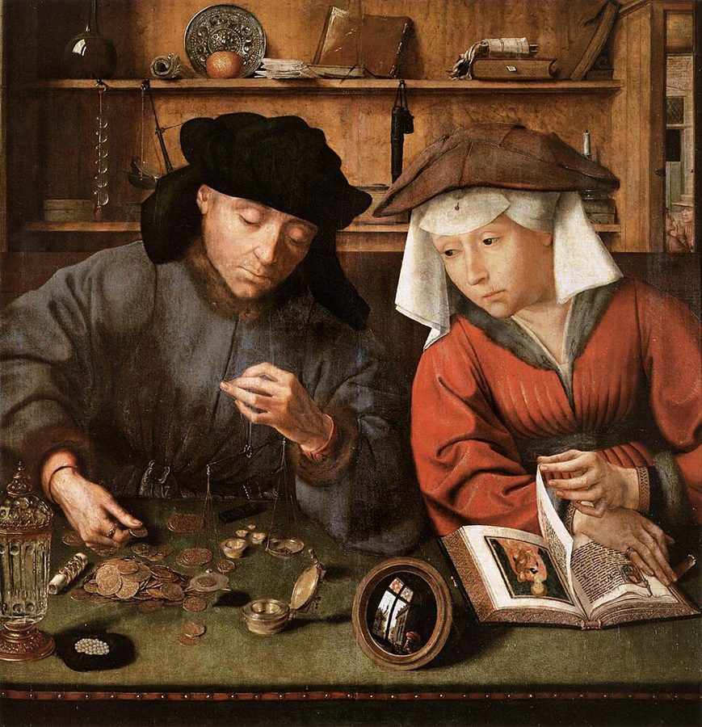
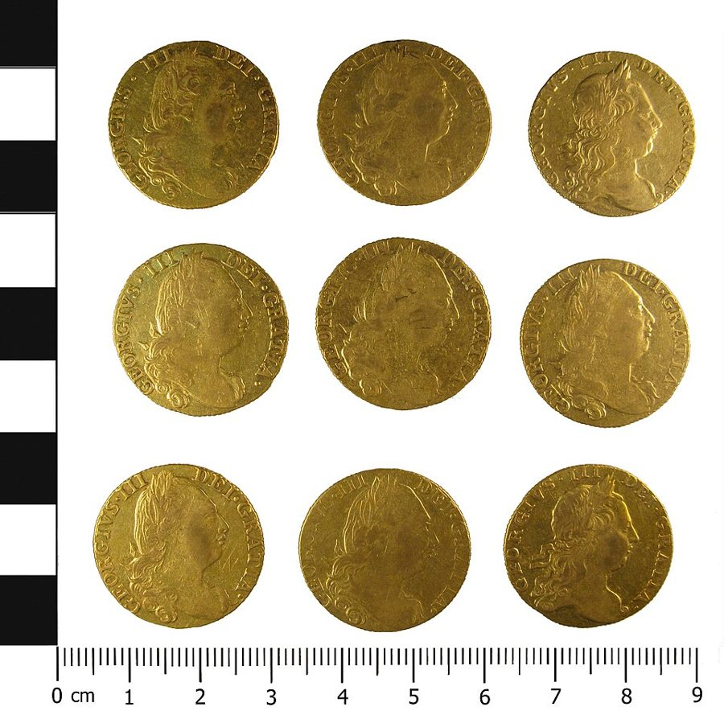
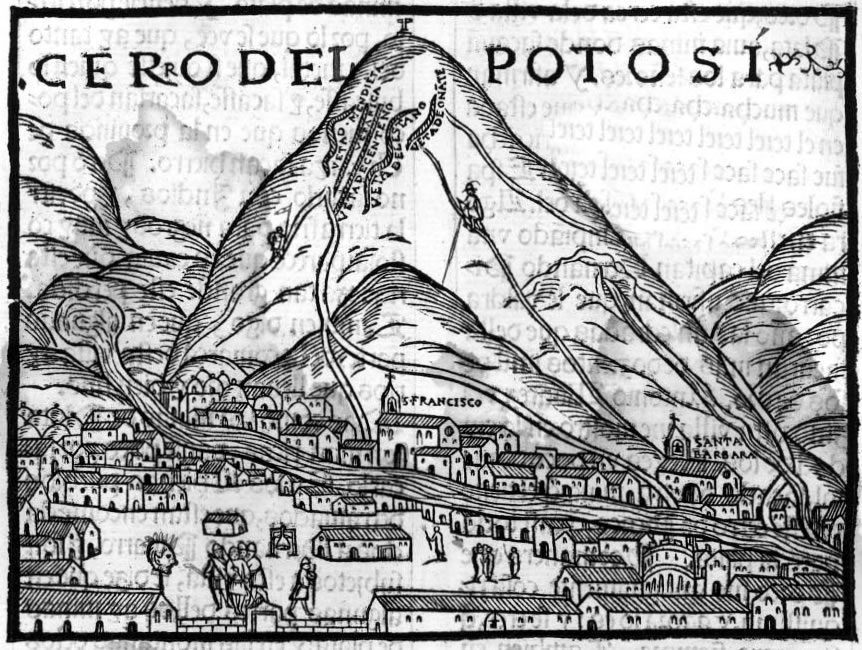
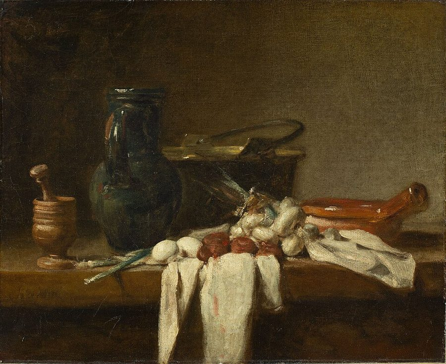

这一页在做什么
卷四的开头。前三卷讲财富从哪来，这一卷转过身来，驳当时欧洲各国奉行了两百年的一整套政策。斯密先给政治经济学下定义，再去拆这套政策的地基：国家富不富，看它攒了多少金银。他讲这个念头从哪来，商人怎样拿它说服了议会，然后分几路反驳：金银买得到，打仗不靠金库，对外贸易的好处在别处。读的时候抓两条线：他怎样把「钱」和「财富」分开；一个经不起推敲的观念，怎样变成了国策。

读之前：这一页在全书的哪里
上一页（卷三第 4 章）讲城市的商业怎样在无意中瓦解了封建领主，卷三的历史到此为止。卷四换了题目：各国为了致富信过的两套「政治经济学体系」，先是重商主义（第 1–8 章），再是重农主义（第 9 章，页 22）。这一页只拆一个观念，却是整个卷四的地基。第 1 章末尾列出重商主义的六种手段，后面六章一章讲一种；下一页（页 17）讲第一种，限制进口，「看不见的手」就在那里。
一个国家富不富，能拿它有多少金银来量吗？如果不能，欧洲各国为什么两百年来都这样量？
第 15 段斯密说，政府操心一国的货币有多少，是最多余不过的事。在金银当钱的年代，这话大体不错；今天中央银行的主业，正是管货币和信用。别把这一句直接搬到今天，见「对照今天」。
读的时候带着这几个问题。不用先找答案，读完回来对照「检查一下理解」。
- 「财富就是钱」这个念头是怎么来的？西班牙人和鞑靼人，斯密觉得谁的想法更接近真相？§2
- 商人反对禁止金银出境，给了两条理由。斯密认为哪里说得对，哪里是诡辩？§3
- 金银和锅碗瓢盆是一回事吗？这个比方哪里最有说服力，哪里你觉得不太像？§5
- 斯密说对外贸易真正的好处是什么？它和卷一的别针厂有什么关系？§8
这一页的路线
斯密的打法是先把对手的说法讲足，再拆。卷四引言只有两段，定义政治经济学，预告两种体系。第 1 章先讲「财富就是钱」这个俗见的来路：钱既是交换的工具，又是量价值的尺子；再摆出几种持这种看法的人，洛克，还有主张攒金银备战的人。接着是一段政策史：各国先禁止金银出境，商人嫌不方便，改口说只要盯住贸易差额，说服了议会，政府的操心换了个对象。从第 11 段起才是斯密自己的反驳，分四路：金银像葡萄酒一样买得到，顺带讲「钱荒」；钱只是用具，像锅；打仗靠的是货物，不是金库；对外贸易的好处在扩大市场。读到第 28–30 段会觉得掉进了战时财政的细账，那是第三路的补充，可以跳。第 34 段他说明为什么不怕啰嗦，随后列出六种手段，就是后面六章的目录。
斯密落在哪：财富不是金银，而是金银能买到的东西，也就是一国每年的产物；金银和别的商品一样，有东西换就买得到，用不着政府操心。正是把金银当成财富，才引出限制进口、鼓励出口的整套政策，后面六章逐一算它们对年产物的账。
分节地图
这一页是卷四引言和卷四第 1 章，本站切成 9 节。粗体是本站起的节名；「杨译里找」后面是杨敬年译本里这一节开头附近的小标题或第一句，在电子书里搜它就能跳过去；灰色的英文是原文这一节开头的几个词。标「先读」的是最短读法，读完打个勾。
- 政治经济学要干什么政治经济学的第一个目标是为人民提供生活资料POLITICAL œconomy, considered as a branch of …只有两段，是整个卷四的地图。第 1 段有一处改口值得留意：与其说给人民提供收入，不如说让人民能自己挣到。
- 财富就是钱？在普通语言中财富和货币被看做是同义语THAT wealth consists in money, or …俗见从哪来。第 2 段西班牙人问金子、鞑靼人问牛羊，斯密说后者「也许」更接近真相。第 3–4 段是别人的看法，不是斯密的。
- 从禁止金银出境到贸易差额因此所有欧洲国家都试图积累金银起初是禁止出口In consequence of these popular notions, all …第 7–8 段是商人的说法，第 9 段斯密打分：一半在理，一半诡辩。第 10 段写商人怎样说服不懂行的议员，全章最辛辣。
- 金银和葡萄酒一样买得到没有政府的任何注意，金银也会进口A country that has no mines of …好看在例子：第 12 段五十吨金子对一千条船，第 13 段斯巴达和走私茶。第 16 段说「钱荒」其实是借不到钱。
- 锅碗瓢盆货币只构成国民资本的一小部分It would be too ridiculous to go …全章的核心论证。第 18 段说商人会破产、国家不会；第 19 段锅碗瓢盆的反证，是全书最好笑的段落之一。
- 打仗靠的不是金库为进行远方战争，不必要积累金银It is not always necessary to accumulate …回头驳第 4 段「平时攒钱备战」。第 26 段拿七年战争算账：九千万镑的仗，全国的金银按最夸大的估计也只有三千万。
- 大商业共和国的货币可以使用一部分在国与国间流通的金银块，但必须用商品去得到Besides the three sorts of gold and …战时怎样用制成品付军饷的细账，结论和上一节一样，最后靠年产物，可以跳。第 29 段末和第 30 段的君主金库可以挑着看。
- 对外贸易真正的好处输入金银不是一国得自对外贸易…The importation of gold and silver is …斯密正面说对外贸易好在哪：给剩余找出路，扩大市场，推进分工。第 32 段讲美洲，末句是少见的道德谴责。
- 重商主义的六件武器在开头将土地、房屋和可消费货物包括在财富之内的作家们常常在后来忘记了这些I thought it necessary, though at the …第 34 段说连明白人写着写着也会把财富当成金银；第 35–45 段列出两种限制、四种鼓励，后面六章一章一种。
先用中文过一遍：这一页的概念
先把这一页用到、斯密默认你懂的几个概念讲一遍。讲的是概念本身，斯密拿它推出什么，读原书时自己看。每个概念都有一句「今天」：今天的经济学怎么叫它、怎么看它。
§1政治经济学 political œconomy
œconomy 原本是「管家」的意思，political œconomy 就是给一个国家当家的学问。斯密把它算作政治家和立法者的一门学问，给它定了两个目标：一是让人民有充足的收入或生计，他随即改口，「更确切地说」，是让人民能自己挣到；二是让国家有足够的收入办公共的事。第一个目标是卷一到卷四的事，第二个是卷五的事。这个定义提醒读者：《国富论》本来是写给议员和大臣看的，书里的理论最后都要落到「该定什么政策」上。
今天：19 世纪末起，「经济学（economics）」取代了这个名字，研究对象也成了一般的稀缺资源怎样配置，不只给立法者出主意。今天说「政治经济学」，多指研究政治和经济怎样互相影响的那一支。
在这一页：卷四引言第 1 段。卷四讲的两种「体系」，就是两套给治国者开的致富方子。
§1重商主义 the commercial, or mercantile system
斯密给 16 到 18 世纪欧洲各国主流经济政策起的总称，译本：「重商主义体系」。核心想法是：金银就是财富；没有金矿银矿的国家，只能靠出口多于进口，让外国拿金银来补差额；所以要限制进口、鼓励出口，扶持本国制造业，抢占殖民地。它不是一个有掌门人的学派，而是两百年间许多商人、官员写的小册子和各国的法令，名字是批评它的人起的。下面这张图是第 1 章末尾列出的六种手段，也是后面六章的目录。
今天：今天说某国搞「新重商主义」，是指把贸易顺差当目标、用补贴和关税扶出口的做法。斯密有没有把对手说简单了，思想史家至今在争，见「本站怎么看」。
在这一页：卷四引言第 2 段起名，第 1 章拆它的地基，第 35–45 段列出它的六种手段。
§3贸易差额 balance of trade
一国一段时间里卖给外国的东西总值，减去从外国买来的东西总值。卖得多叫顺差，买得多叫逆差。在金银当钱的年代，顺差意味着外国要拿金银来补差额，所以重商主义者把它当成国家挣钱的记分牌。打个比方：一家人一年卖出去的比买进来的多，手里的现钱就多了，重商主义者把一国也看成这样一户人家。斯密的回答是：现钱多了不等于日子好了，而且国家和一家店不一样（第 18 段）。第 8、9 段他几次提到这个词，都加上「他们所谓的」。
今天：贸易差额是今天国际收支账里的一项。主流看法是：一国总的差额主要反映它的储蓄和投资之差，逆差不等于吃亏；对某一个国家的双边差额，更说明不了什么。见「对照今天」。
在这一页：第 8 段商人第一次搬出它；第 35 段说重商主义就建在它和「财富即金银」这两条原则上。
§3汇价 the exchange
在本国付钱，买一张在外国兑付的汇票，要付多少。18 世纪的商人很少真把金银运过海，而是向银行家买汇票，让对方在外国照票付钱。第 8 段的例子：英国对荷兰的汇价「不利 5%」，就是在英格兰要付 105 盎司银子，才买得到一张在荷兰兑 100 盎司的汇票。商人说，汇价不利会让逆差越滚越大；斯密说正相反，它等于给进口货加了一道税，进口少了，逆差会缩小。不过第 9 段里，只有这一条他加了个「也许」。
今天：这就是汇率。本币贬值，进口变贵、出口变便宜，通常会改善贸易差额，这是斯密那一边；但见效慢，也不一定扭得过长期的逆差。
在这一页：第 8–9 段，全章最绕的地方。先抓结论：商人说汇价不利加重逆差，斯密说会减轻。
故事和背景
这一页里的人、事和 18 世纪的东西，按在书里出现的顺序排，标题前是节号。
§2斯密也会记错
第 2 段的鞑靼人出自中世纪欧洲派去蒙古的使者留下的游记。Cannan 在注里指出，斯密把两个人记混了：普拉诺·卡皮诺（Plano Carpini）是 1246 年教皇派去的修士；问法国牛羊多不多的事，记在另一位修士 Rubruck 的游记里，他是 1253 年法王路易九世派去的。第 3 段说洛克认为金银是一国动产里最实在的部分，Cannan 的评语更不客气：这一段「几乎没有根据」，大概是斯密从当年的讲稿里原样搬过来，没有再查原书。第 30 段那句讲波斯宫廷的话，斯密说是德西利达斯（Dercyllidas）说的，Cannan 说据色诺芬的记载，说这话的其实是另一个人。写大书的人也靠记忆。这些不影响论证，只提醒读者：书里转述别人的话，未必是那人的原意。
§3孟：替东印度公司运银子辩护的人
东印度公司每年把大批白银运去亚洲买香料，国内常有人骂它掏空了国家。孟替公司辩护：运出去的银子换回货，再转卖给别国，带回来的银子更多，就像农夫把好谷子撒进地里，只看播种像个疯子，看到收获才知道他的本事。他的《英国得自对外贸易的财富》大约写于 1630 年前后，生前没有出版，1664 年才由儿子 John 印出来，离他去世已经二十多年。书的副题说，对外贸易的收支差额就是衡量国家财富的准绳，这正是斯密要拆的那一句。Cannan 顺手挑了个小错：书名里是 by，斯密写成了 in。
§4五十吨金子和一千条船

第 12 段的算术很好玩。英格兰要是缺金子，一条邮船从里斯本就能运来 50 吨，铸成五百多万基尼；同样价值的谷物，按每吨 5 基尼算，要 100 万吨的船位，也就是一千条千吨大船，整个英国海军都装不下。挑里斯本不是随口说的：18 世纪巴西的金子运到里斯本，葡萄牙禁止金银出口，英国商人照样用往返法尔茅斯的邮船把金子运回英国，葡萄牙官府管不着。基尼是 1717 年起官定值 21 先令的金币，一枚约重 8.4 克。本站按 50 英吨约合 5 万多公斤粗算，能铸约六百万枚，斯密说「五百多万」，一点不夸张。
§4斯巴达的铁钱和走私的茶
第 13 段举了两个「禁也禁不住」的例子。古代斯巴达的立法者莱克尔加斯（Lycurgus，通常译莱库古），据普鲁塔克记载，收掉了金银币，只准用铁钱，铁钱又笨又不值钱，十个米那就得占一间屋子、用两头牛拉。斯密说，等斯巴达人有了买金银的本钱，金银照样冲破了他的法律。眼前的例子是茶：荷兰和戈登堡（瑞典东印度公司设在那里）的公司卖的茶比英国东印度公司的便宜一点，英国海关再「血腥」的法律也挡不住走私。斯密算过，一磅茶的体积约是同价白银的一百倍、同价黄金的两千多倍，茶都禁不住，何况金银。后话：1784 年首相小皮特把茶税从约 119% 一下降到 12.5%，走私的生意几乎就此断了。
§6九千万镑的仗
第 26 段说的「上一次对法战争」是七年战争（1756–1763）。斯密的账是这样的：这场仗花了大不列颠九千多万镑，其中七千五百万是新借的债，三分之二以上花在海外，德意志、葡萄牙、美洲、地中海的港口、东西印度。可英国国王没有金库，也没听说谁家熔掉了大批银器；全国流通的金银，一般认为不超过一千八百万镑，就按他记得的最夸大的估计算三千万，仗要是拿现钱打的，这些钱得在六七年里出国、回国两趟，居然谁也没察觉。所以他断定，军费主要是变成英国的货物运出去的。几个大数他取自 1768 年的小册子《英格兰的现状》（杨译书名），Cannan 注说那是在格伦维尔授意下由 William Knox 执笔的。第 25 段还顺口说，当今欧洲的君主里，似乎只有普鲁士国王还在攒金库。
§8波托西：银山和山下的人

西属美洲的白银大头出自秘鲁和墨西哥的银矿，波托西是其中最有名的一座。斯密在第 32 段说，美洲的矿让金银便宜了：如今一套银器，大约只要 15 世纪三分之一的谷物或劳动就买得到。16 世纪美洲白银涌进欧洲，到 1600 年前后欧洲物价大约涨到原来的三四倍，后人叫它「价格革命」；Hamilton 1934 年把它归于美洲白银，也有学者认为人口增长同样要紧。这一面，斯密说只是「很小的方便」。另一面，他说是欧洲人「野蛮的不义」：伦敦大学学院的研究者 2019 年估计，欧洲人到来后的一百年里，美洲原住民从约 6000 万降到约 600 万，死于传染病、战争和饥荒。
原典：斯密的原话
这本书是公版书，下面几段整段放斯密的原文，配本站的白话译。原文后面的灰字告诉你它在杨译里的哪个小标题附近，可以对照着读；最后一行是这段里今天容易读错的 18 世纪词。
§2西班牙人问金子，鞑靼人问牛羊
好懂又好玩，一下子把「财富到底是什么」摆到桌上。在杨译同样，鞑靼人认为财富由牲畜组成那个小标题下面。
For some time after the discovery of America, the first enquiry of the Spaniards, when they arrived upon any unknown coast, used to be, if there was any gold or silver to be found in the neighbourhood? By the information which they received, they judged whether it was worth while to make a settlement there, or if the country was worth the conquering. Plano Carpino, a monk sent ambassador from the king of France to one of the sons of the famous Gengis Khan, says that the Tartars used frequently to ask him, if there was plenty of sheep and oxen in the kingdom of France? Their enquiry had the same object with that of the Spaniards. They wanted to know if the country was rich enough to be worth the conquering. Among the Tartars, as among all other nations of shepherds, who are generally ignorant of the use of money, cattle are the instruments of commerce and the measures of value. Wealth, therefore, according to them, consisted in cattle, as according to the Spaniards it consisted in gold and silver. Of the two, the Tartar notion, perhaps, was the nearest to the truth.
本站译：美洲发现以后的一段日子里，西班牙人每到一处没人知道的海岸，头一件事总是打听：附近找得到金子银子吗？他们凭打听来的消息，判断值不值得在那里落脚，或者这地方值不值得去征服。有个修士叫普拉诺·卡皮诺，受法国国王的差遣，出使去见大名鼎鼎的成吉思汗的一个儿子。据他说，鞑靼人常常问他：法兰西王国的羊和牛多不多？他们这一问，和西班牙人那一问是一个用意：想知道那个国家够不够富，值不值得去打。鞑靼人和所有游牧民族一样，大多不懂得用钱，牲口就是他们做买卖的工具、量价值的尺子。所以在他们看来，财富就是牲口，正如在西班牙人看来，财富就是金银。两种想法比一比，鞑靼人的也许更接近真相。
「perhaps」是斯密的原话：他没说鞑靼人对，只说更接近。为什么更接近，他在这里没解释；按本章的道理推，大概因为牛羊本身就能吃能用，金银只是拿去换东西的。派卡皮诺的其实是教皇，见「故事和背景」。
- enquiry打听、询问，inquiry 的旧拼法
- nations of shepherds游牧民族，靠放牧为生的民族，不是「牧羊人的国家」
- instruments of commerce做买卖的工具，今天说「交易媒介」
§3懂行的人说给不懂行的人听
斯密写「一个观念怎样借着利益变成国策」的典型笔法，商人和议员一个也没放过。在杨译这些论据有一部分是诡辩那个小标题下面。
Such as they were, however, those arguments convinced the people to whom they were addressed. They were addressed by merchants to parliaments, and to the councils of princes, to nobles, and to country gentlemen; by those who were supposed to understand trade, to those who were conscious to themselves that they knew nothing about the matter. That foreign trade enriched the country, experience demonstrated to the nobles and country gentlemen, as well as to the merchants; but how, or in what manner, none of them well knew. The merchants knew perfectly in what manner it enriched themselves. It was their business to know it. But to know in what manner it enriched the country, was no part of their business. … To the judges who were to decide the business, it appeared a most satisfactory account of the matter, when they were told that foreign trade brought money into the country, but that the laws in question hindered it from bringing so much as it otherwise would do. Those arguments therefore produced the wished-for effect.
本站译：不管这些论证成色如何，听的人被说服了。说的是商人，听的是议会、君主的御前会议、贵族和乡绅；是被认为懂贸易的人，讲给心里明白自己一窍不通的人。对外贸易让国家富起来，这一点贵族、乡绅和商人都从经验里看到了；可它究竟怎样让国家富起来，谁也说不太清。商人十分清楚它怎样让自己发财，那是他们的营生，该懂。可它怎样让国家发财，就不是他们的营生了。……要拍板的人听人说：对外贸易给国家带来钱，眼下这几条法律却挡着它，让它带进来的钱不如本来能带的多。他们觉得这个解释再圆满不过。于是这些论证收到了想要的效果。
斯密没说商人撒谎，说的是他们只懂自己那一摊，又恰好是唯一开口的人。这幅「行家给外行出主意」的画面，下一页第 4 节和卷一第 11 章末尾都还会出现。
- councils of princes君主的御前会议、枢密院一类，不是今天的「委员会」
- country gentlemen乡绅：有地产、住在乡下的绅士，当时议会里的多数
- business本行、分内的事；同一段末尾 decide the business 的 business 是「这件事」
§5锅碗瓢盆
全书最好笑的反证之一：把对手的逻辑原样套到锅上。在杨译只是因为货币是交易媒介，所以买进比卖出容易之后的第二段，讲「锅类」的那一段。
Consumable commodities, it is said, are soon destroyed; whereas gold and silver are of a more durable nature, and, were it not for this continual exportation, might be accumulated for ages together, to the incredible augmentation of the real wealth of the country. Nothing, therefore, it is pretended, can be more disadvantageous to any country, than the trade which consists in the exchange of such lasting for such perishable commodities. We do not, however, reckon that trade disadvantageous which consists in the exchange of the hard-ware of England for the wines of France; and yet hard-ware is a very durable commodity, and were it not for this continual exportation, might too be accumulated for ages together, to the incredible augmentation of the pots and pans of the country. … that to attempt to increase the wealth of any country, either by introducing or by detaining in it an unnecessary quantity of gold and silver, is as absurd as it would be to attempt to increase the good cheer of private families, by obliging them to keep an unnecessary number of kitchen utensils. … Gold and silver, whether in the shape of coin or of plate, are utensils, it must be remembered, as much as the furniture of the kitchen.
本站译：有人说，吃的用的东西很快就耗掉了，金银却经久耐用，要不是一直往外流，可以一代一代攒下去，让国家的真实财富多得叫人不敢相信。他们于是声称，拿这么耐久的东西去换这么易坏的东西，对一个国家是再吃亏不过的买卖。可是，拿英格兰的铁器换法国的葡萄酒，我们并不觉得吃亏；铁器也是很耐用的东西，要不是一直往外卖，同样可以一代一代攒下去，让全国的锅碗瓢盆多得叫人不敢相信。……想靠引进或扣住用不着的金银来让一国更富，就像想靠逼着各家多备些用不着的厨具，来让各家吃得更好一样荒唐。……别忘了，金银不管铸成钱还是打成器皿，和厨房里的家什一样，都是用具。
斯密假定金银只有两种用处：当钱流通货物，当器皿摆在家里。今天的经济学会补一句：钱还会被人攒着不用，这一点锅不会。见「本站怎么看」。
- hard-ware五金、铁器（锅、刀、锁之类），不是电脑的「硬件」
- good cheer好饭好菜、丰盛的伙食，不是泛泛的「快乐」
- plate金银器皿，富人家的银餐具，不是「盘子」
- furniture of the kitchen厨房里的家什、器具，不是「家具」

§8美洲到底给了欧洲什么
斯密讲美洲发现的真正意义，末句是全书少见的道德谴责。杨译把这一段的小标题发现美洲对欧洲有利，不是由于使金银价格低廉错排到了段后，搜它往前一段就是。
The discovery of America, however, certainly made a most essential one. By opening a new and inexhaustible market to all the commodities of Europe, it gave occasion to new divisions of labour and improvements of art, which, in the narrow circle of the ancient commerce, could never have taken place for want of a market to take off the greater part of their produce. The productive powers of labour were improved, and its produce increased in all the different countries of Europe, and together with it the real revenue and wealth of the inhabitants. The commodities of Europe were almost all new to America, and many of those of America were new to Europe. A new set of exchanges, therefore, began to take place which had never been thought of before, and which should naturally have proved as advantageous to the new, as it certainly did to the old continent. The savage injustice of the Europeans rendered an event, which ought to have been beneficial to all, ruinous and destructive to several of those unfortunate countries.
本站译：可是，美洲的发现确实带来了一个极其根本的变化。它给欧洲的一切商品打开了一个新的、无穷无尽的市场，由此出现了新的分工和新的技术改进；在过去那个狭小的商业圈子里，这些都不可能发生，因为没有市场来消化大部分产品。劳动的生产力提高了，欧洲各国的产出都增加了，居民的真实收入和财富也跟着增加。欧洲的货，美洲人几乎样样没见过；美洲的许多货，欧洲人也是头一回见。于是开始了一整套前所未有的新交换。按理说，它对新大陆本该和对旧大陆一样有利，对旧大陆它确实有利。欧洲人野蛮的不义，却让这件本该对所有人都有好处的事，成了几个不幸国家的灭顶之灾。
「本该」（should have）是这段的关键：新大陆本应同样得益，实际却遭了殃。杨译把它译成了已经发生的事，见「译本勘误」。
- art技艺、生产技术，improvements of art 是技术改进，不是「艺术」
- savage野蛮的。这里骂的是欧洲人；斯密在下一段又把美洲多数民族叫作 savages，那是 18 世纪欧洲人的说法，今天不这样说
译本勘误
杨译这一章整体可靠。下面只收会把人读歪的一处。灰字是英文原文那一处的几个词；方框里是杨译的原句，在电子书里搜它。
§8本该对新大陆有利，实际没有译反
… should naturally have proved as advantageous …
译本：「它自然表明了对新大陆有利」
should have proved 是「本该证明对新大陆有利」，说的是没有实现的事，下一句才接得上：欧洲人的不义让它成了几个国家的灾难。杨译成「表明了有利」，像是斯密说美洲也得了好处，和下一句自相矛盾。
读完：斯密到底说了什么
读完原书再看。下面把这一页的论点按逻辑重排，每条后面标着依据在哪几段，以及今天怎么看（理由在「对照今天」和「本站怎么看」）。
财富是钱能买到的东西，不是钱本身
他说认真证明这一点「太可笑了」，还是证明了：钱一般只是国民资本里很小、也总是最不生利的一块；商人急着把货换成钱，是因为钱是公认的交换工具，不是因为钱更像财富；一个商人会因货卖不出去破产，一个国家不会。人要钱，是为了它能买的东西。
§5 第 17–18 段金银和别的商品一样，有东西换就买得到，政府不必操心
没有葡萄园的国家照样喝得上酒，他说政府「似乎」没必要对金银比对酒更上心。金银体积小、价值大，最容易跟着有效需求流动，禁也禁不住；真缺了，赊账、互相抵账、纸币都能顶上。所以他说，政府盯着一国货币的多少，是最多余的操心。
§4 第 11–15 段汇价不利不会加重逆差，也许反而会缩小它
他先承认商人说对了两点：做生意时出口金银常常有利，禁令也拦不住。错在以为金银比别的东西更需要政府看着；「也许」也错在说汇价不利会加重逆差：汇价高等于给进口货加税，商人还会设法让进出口持平。
§3 第 9 段对外贸易的好处在于扩大市场、推进分工，美洲的发现正是这样让欧洲受益
贸易把一国用不着的剩余换成用得着的东西，又让小小的国内市场不再卡住分工。美洲让金银变便宜，只是很小的方便；它真正的贡献是一个新市场，带来新的分工和技术改进。
§8 第 31–32 段重商主义的整套政策，都出自「财富就是金银」这个俗见
连明白人写着写着也会把财富当成金银。从「财富是金银」「没有矿的国家只能靠顺差得到金银」两条原则，推出限制进口、鼓励出口两大引擎和六种手段。他把这一章当作后面六章的地基。
§9 第 34–35 段合起来：钱是用具，财富是一国每年的产物。拆掉「财富即金银」这块地基，后面六章就可以不再问一项政策带进来多少钱，只问它让年产物变多还是变少。这把尺子，今天仍是评价贸易政策的出发点。
对照今天
这一页里能拿后来的研究和数据检验的说法。每张卡判的是标题里「书里的说法：」后面那一句。
- 成立今天的经济学和证据支持这句话。
- 部分成立大方向对，细节或适用范围要改。
- 过时说的是 18 世纪的世界，当时也许对，今天的制度和技术已经变了。
- 被推翻后来的经济学或证据说明它错了。
- 有争议经济学界至今没有定论，两边各有代表性的研究。
书里的说法：财富不在金银，而在金银能买到的东西
- 书里
- 第 17 段；第 19 段说金银和锅一样，只是用具。
- 当时
- 欧洲各国用金银铸钱，国家的贫富常拿国库和铸币的多少来量，英国的法律还在管金银出境。
- 今天
- 1971 年美国停止让外国政府拿美元兑换黄金，从此主要货币连金属都不是了，各国照样运转；衡量一国贫富，用的是 GDP 这类一年的产出。世界银行 2021 年发布的报告估算各国的全部财富，书名里就有 Wealth of Nations：2018 年全球财富里约 64% 是人力资本，也就是人一辈子能挣到的收入。世界银行算的是家底，比斯密的「年产物」又多想了一步，离金银就更远了。核对于 2026-10。依据：美联储历史网站，Nixon Ends Convertibility of US Dollars to Gold；World Bank, The Changing Wealth of Nations 2021。
书里的说法：汇价不利会让进口变贵，从而缩小逆差，不会加重它
- 书里
- 第 9 段，这一条斯密加了「也许」。
- 当时
- 斯密的朋友休谟 1752 年在《论贸易差额》里讲过另一条自动调节：金银流出的国家物价会跌，出口变便宜，差额会自己回来。斯密这一章没有用这条机制。
- 今天
- 汇率通过进出口价格影响贸易差额，是今天教科书的标准内容，这一半站在斯密一边。但差额不会自己归零：美国从 1976 年起年年贸易逆差。今天的主流看法是，一国总的经常账户差额主要反映它的储蓄和投资之差；国际货币基金组织的入门文章说，资本稀缺的穷国借外资搞建设，出现逆差可以是很自然的事。核对于 2026-10。依据：美国国会研究服务处 IF13047；Ghosh & Ramakrishnan, Current Account Deficits: Is There a Problem?, IMF Finance & Development。
书里的说法：一国缺不了钱，政府不必操心货币的多少
- 书里
- 第 15 段；第 16 段说「钱荒」其实是借不到钱。
- 当时
- 英国用金银铸币，加上银行券；钱多了会流出，少了会流进来（第 12–13 段）。斯密驳的是「国家要攒金银」。
- 今天
- 「钱荒其实是信用荒」站得住，和今天对金融危机里「信用紧缩」的理解一致；国家不必囤金银，也没错。但「货币多少不用管」被 20 世纪改写了：Friedman 和 Schwartz 1963 年指出，1929–1933 年美国的货币存量跌了三分之一以上，美联储没有去补，萧条因此更深；Eichengreen 和 Sachs 1985 年发现，1930 年代较早让本币对黄金贬值的国家，复苏得更好。今天中央银行的主业就是管货币和信用，危机时还要当「最后贷款人」。核对于 2026-10。依据：Friedman & Schwartz, A Monetary History of the United States, 1963；Eichengreen & Sachs, Journal of Economic History, 1985。
书里的说法：美洲的发现让欧洲富起来，靠的是新市场带来的分工，不是金银
- 书里
- 第 32 段：金银变便宜只是「很小的方便」，真正的改变是新市场。
- 当时
- 斯密写书时，大西洋贸易已经做了两百多年，英国和北美殖民地的贸易是他眼里最大的新市场，卷四第 7 章（页 20）细讲。
- 今天
- Acemoglu、Johnson 和 Robinson 2005 年的研究发现，1500–1850 年西欧的崛起，主要来自有大西洋出海口、做大西洋贸易的国家，大西洋港口城市长得比别的城市都快，这支持「贸易让欧洲富」。但他们找到的渠道不止市场和分工：贸易壮大了商人，商人逼出了限制王权、保护财产的制度，原本王权就受约束的国家得益最大。斯密看对了方向，漏了制度这一条。核对于 2026-10。依据：Acemoglu, Johnson & Robinson, The Rise of Europe: Atlantic Trade, Institutional Change, and Economic Growth, American Economic Review, 2005。
本站怎么看
这一页最值得争的几个问题。每块先摆主流看法，再摆斯密在书里怎么说，最后是本站的评论。
重商主义者真的以为金银就是财富吗
主流看法：思想史家分两边。一边认为斯密说得基本不冤：Viner 1937 年的《国际贸易理论研究》梳理了那两百年的小册子，把重商主义看成一套「常识」，推理里的漏洞因为缺少分析工具而没人看出；他 1948 年的论文也说，这些作者有把财富等同于货币的倾向。另一边认为斯密画了个靶子：较晚的研究指出，1620 年代的孟和 Misselden 并没有犯这个错；「重商主义」是批评者事后起的名字，把各说各话的作者捏成了一个学派（Magnusson 1994）。凯恩斯 1936 年在《通论》第 23 章更替他们说了好话，见下一块。
斯密的看法：第 34 段：他知道有几位最好的英国作者开头都说财富包括土地、房屋和各种消费品，只是论证写着写着，这些东西「似乎」就从记忆里溜走了；第 9 段也承认商人的论证有一半在理。
本站的评论：斯密拆的不只是一个观念，更是这个观念撑起来的政策和背后的利益。第 10 段说得明白：商人懂得贸易怎样让自己发财，至于怎样让国家发财，不是他们的营生。就算个别作者想得更周全，关税、禁令、奖金确实是照「多卖少买、攒下金银」的思路定的。说他把对手简化了，这个批评成立；说他因此驳错了，不成立。
钱真的只是锅碗瓢盆吗
主流看法：长期看，钱多钱少主要改变物价，不改变一国能生产多少，这是今天的共识，也是斯密的意思。分歧在短期：凯恩斯 1936 年指出，人会把钱攒着不用；在金银当钱的年代，钱少会抬高利率、压低投资和就业。他认为重商主义者对此有实践中的直觉，适度的顺差能刺激经济，但也警告各国竞相争顺差会两败俱伤。
斯密的看法：第 19 段：金银和厨具一样是用具，多出来的会被送出国；第 15 段：缺钱时，赊账和纸币可以顶上。
本站的评论：在斯密要驳的那一点上，比喻是对的：靠攒金银致富，就像靠多买锅改善伙食。但锅不会被人囤起来不用，钱会；锅少了大家照样做饭，钱少了，买卖和借贷会一起冻住。斯密在第 16 段描写过这种场面，却把它归为做生意做过了头的人借不到钱，不是钱少了。用今天的话说，他看清了长期，低估了短期。读这一段，尽可享受他的反证，也记住这个比喻的边界。
「逆差就是吃亏」为什么两百多年不散
主流看法：经济学家大多认为，一国总的逆差主要反映储蓄少于投资，不等于吃亏；对某一个国家的双边逆差更说明不了什么。可这个想法在政治上一直有市场：2025 年 4 月美国宣布「对等关税」，各国的税率基本是拿美国对该国的货物逆差除以从该国的进口，再减半算出来的；耶鲁的 Kortum 等经济学家批评，双边逆差和对方设的贸易壁垒没有关系。
斯密的看法：第 18 段：商人可能因货卖不出去而破产，国家不会；钱追着货跑，货不一定追着钱跑。第 10 段：这套说法本来就是商人讲给不懂行的议员听的。
本站的评论：它顽强，是因为它合乎过日子的直觉：一户人家买的比卖的多，就是在花老本。斯密的回答至今管用：国家不是一家店，买进来的东西本身就是好处。但也别把逆差说成全无代价：长期借外债撑消费，账总要还；Autor 等人 2013 年发现，中国进口的冲击让美国某些地区的工人集中受损。经济学家反对的是拿差额当记分牌，不是说贸易没有输家。
本站的总体看法：这一章是全书拆得最干净的一章。「财富不是金银」「贸易的好处在扩大市场」今天仍是常识；要打折扣的是另一头：斯密把钱看得太轻，以为政府永远不必管货币的多少，这被 20 世纪的萧条和央行的实践改写了。他对重商主义者的描绘有简化，但他点破的那种拿差额当记分牌的直觉，至今还在左右政策。
检查一下理解
先在心里答，再点开。答错的那题，回书里把对应那一节再读一遍。
1.（§1）斯密给政治经济学定了哪两个目标？第一个目标他改了一次口，改成了什么？
一是让人民有充足的收入或生计，二是让国家有足够的收入办公共事务。改口是：与其说给人民提供收入，不如说让人民能自己挣到。
2.（§2）「财富就是钱」这个俗见是从哪来的？
来自钱的两种职能：它是交换的工具，有钱什么都买得到；它又是价值的尺子，什么都用值多少钱来量。日常说话里，财富和钱就成了同义词。
3.（§3）商人反对禁止金银出境，斯密承认他们说对了哪两点？
做生意时出口金银常常对国家有利；私人觉得出口有利可图时，任何禁令都拦不住。
4.（§4）为什么金银比谷物更容易跟着有效需求流动？
金银体积小、价值大，运费低，哪里贵就往哪里流。同样价值的谷物要一千条千吨大船，金子一条邮船就够。
5.（§5）锅碗瓢盆的比方要说明什么？
金银和厨具一样是用具，该有多少，由用处决定：要流通多少货，有多少人家想用银器。硬要多存，只会少了吃穿用的东西，多出来的金银也会流出国。
6.（§6）斯密怎样拿七年战争证明打仗不靠金库？
那场仗花了九千多万镑，三分之二以上花在海外；全国流通的金银按最夸大的估计也只有三千万。要是靠运钱，全国的钱得在六七年里进出两趟而没人察觉。所以实际是靠出口英国的货物。
7.（§9）重商主义的六种手段是哪些？
两种限制进口：限制本国能生产的外国货，限制来自逆差国的几乎一切货物。四种鼓励出口：退税、奖金、有利的通商条约、建立殖民地。
用一句话写下：斯密在这几章反对谁、主张什么，今天还成不成立。
想一想：新闻里说「我们对某国有几千亿的逆差」时，你的第一反应是吃亏了吗？你对常去的那家超市，也是年年只买不卖，你觉得自己吃亏了吗？两件事哪里一样，哪里不一样？
精彩回顾
隔几周回来时看这里。想不起来，点节号回到那一节。
一句话：钱是用具，财富是一国每年的产物；把金银当财富，才有了限制进口、鼓励出口的整套政策。
西班牙人到新海岸先问有没有金子，鞑靼人问法国的牛羊多不多。斯密说，鞑靼人的想法也许更接近真相。
§2孟说，只看播种的农夫像个疯子，看到收获才知道他的本事：出口金银是为了赚回更多金银。斯密说，这类论证一半在理，一半是诡辩。
§3一条邮船就能运来五百多万基尼的黄金，同样价值的谷物要一千条大船。金银最容易跟着需求走，禁不住，也用不着管。
§4靠多存金银致富，就像靠多买锅改善伙食。今天看，长期说得对；短期里钱会被人囤着不用，这一点锅不会。
§5美洲让欧洲富，靠的不是金银，是新市场带来的分工；欧洲人野蛮的不义，却让它成了几个国家的灭顶之灾。
§8